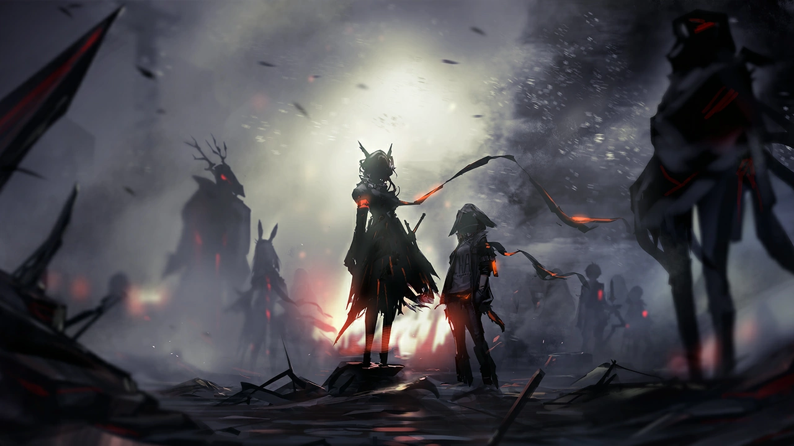

¿Que hay de la historia?
La historia de este juego se centra en Rhodes island, una compañia que tiene la tarea de curar una enfermedad contagiosa y mortal llamada Oripatia, mientras libra una guerra civil contra el grupo de Reunion quienes aprueban la violencia en contra de los no infectados debido a el rechazo que estos tienen en contra de los que contraen la enfermedad.
Para esta mision nos acompañaran diversos operadores contratados por la compañia y nos ayudaran a descubrir el pasado del personaje al que controlamos, el cual se encarga de ser un estratega de la compañia y sufre de amnesia al principio del juego.
Hablemos de la musica
Este juego tiene musica muy destacable pues abarca muchos generos como seria el rock, electronica, pop, metal, jazz, entre otras. La musica que se desarrolla bajo el sello de produccion MSR esta presente dentro de todo el juego y tambien producen temas unicos para cada operador de maxima rareza, tambien cada año se lleva a cabo un concierto de musica llamado Ambience Synesthesia al que asisten miles de personas y se presentan las canciones mas populares o las que proximamente saldran en el juego.
Temas de ejemplo sobre esta musica
para este apartado me gustaria dar algunos ejemplos de canciones y el nivel de produccion que llegan a tener para el juego:
El estilo de musica de este juego puede variar por la region del evento en el que estemos o el personaje del que se trate la cancion.